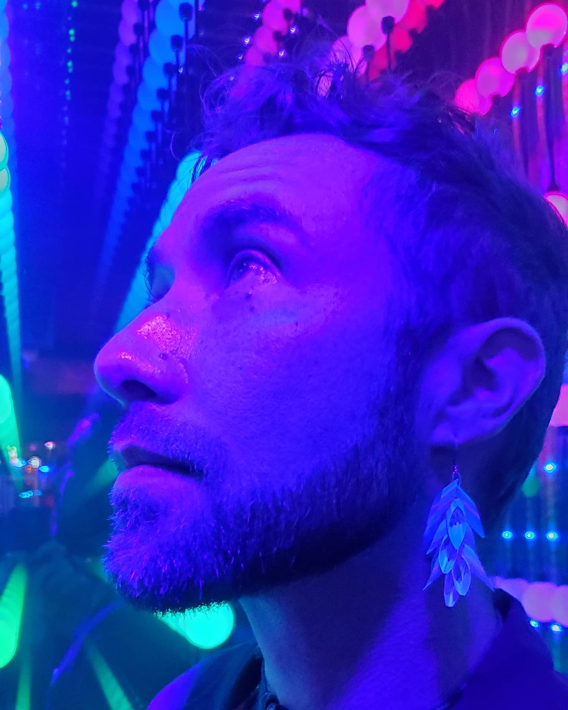
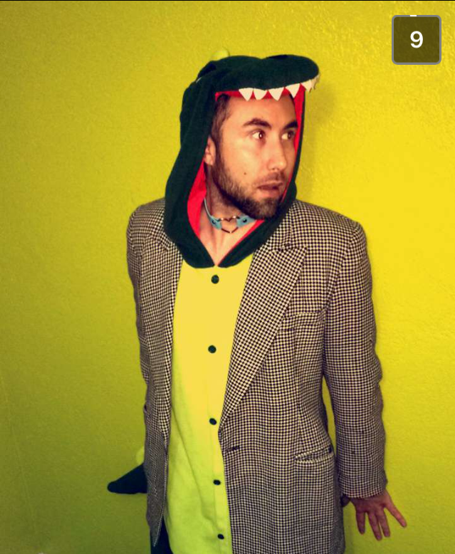

Hi, I'm Brock. I'm a musician, builder, and advocate living in San Diego with one foot in healthcare, and the other pointed toward something else.
I built this site as a student and kept it because it still feels true. I believe in making things, sharing them imperfectly, and letting them grow. That goes for music, food systems, community, and digital technology.
As I get closer to finishing my solo music album, exploring what sovereignty looks like at a neighborhood scale is becoming increasingly urgent. Growing healthy food, reducing dependence on our deteriorating social systems, and creating community by building replicable systems that just about anyone can adopt is what I'm working toward. If that resonates with you, stick around. There's more coming.
My Bucket List
